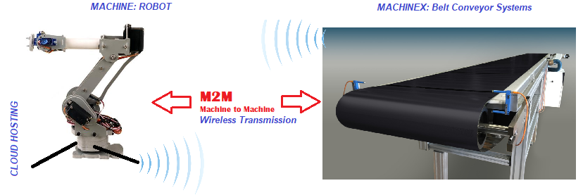

|
Stereo VisionLike human eyes, We successfully were able to give the visual sense to the robots. The robot able to predict depth and recognize 3D coordinates of object. We have enclosed white paper on this with detailed analysis of result. This implementation can be seen in the video as wellClick here for real-life application VIDEO Click here see FULL IMAGE |
 |
Machine to Machine CommunicationMachine-to-machine, or M2M, is a broad label that can be used to describe any technology that enables networked devices to exchange information and perform actions without the manual assistance of humans.Click here for implementation VIDEO Click here see FULL IMAGE |
|  |
Cyber physical SystemWe research and develop Cyber-Physical Systems (CPS) for Environment, Manufacturing, Health Care and Robotics applications. Our models usually comprise of these three elements: physical hardware(embedded system), network(wireless) and computations(cloud).Click here see FULL IMAGE |
Machine LearningWorked with Machine Learning for Applications in IoT, Creating game Bots |
|
|
|
Computer VisionHave worked and implemented Computer Vision problems |
{kind=link}